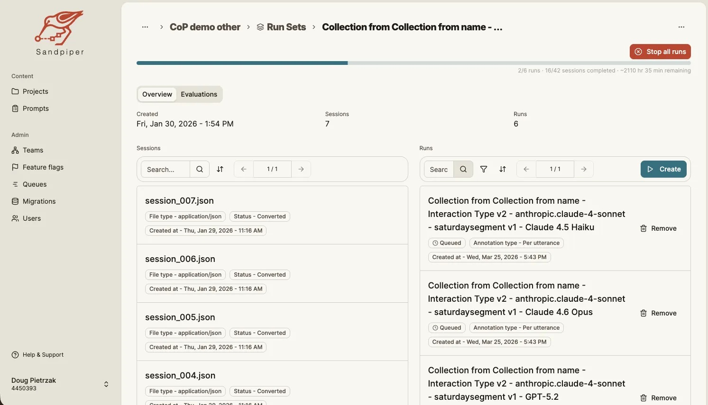
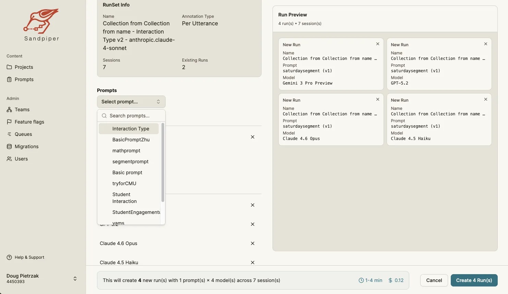
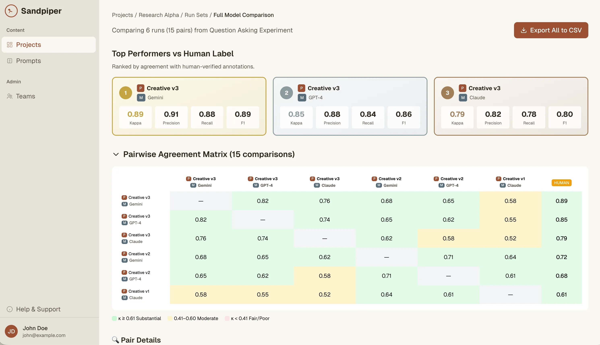
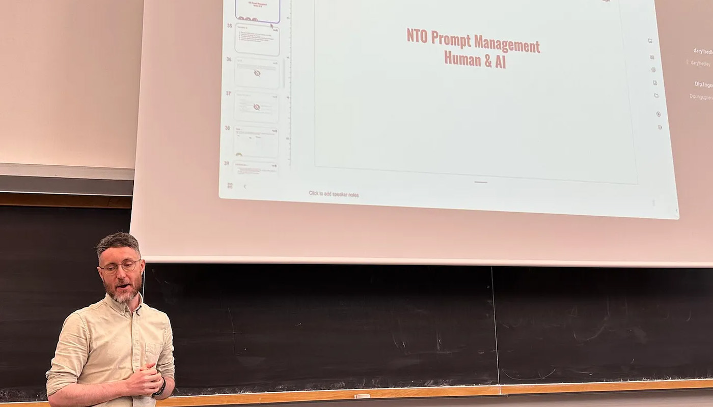

National Tutoring Observatory
Large-scale, open-access dataset of real-world tutoring interactions.
Details
Partners: Cornell University, MIT, Carnegie Mellon University
Date: May 2024 - present
Learn More: nationaltutoringobservatory.org
FreshCognate is a founding technology partner of the National Tutoring Observatory (NTO), a research initiative building the Million Tutoring Moves (MTM) dataset: the world's largest open repository of real tutoring interactions, spanning video, audio, and transcript data from one-on-one and small-group learning sessions.
Our work with the NTO brings new insights into the craft of teaching, advances the science of instruction, and provides critical data for technologists developing cutting-edge AI tools. As part of this shared research infrastructure, we help collect and analyze multimodal tutoring data to understand how one-on-one and small-group tutoring supports student learning.
Design, Engineering & Infrastructure
At FreshCognate, we combine our deep expertise in educational strategy, instructional design, media, and learning technology with human-centered engineering to bridge the gap between AI research and practical educational application.
Our team leads the application design and engineering for key infrastructure components that turn raw, multimodal tutoring recordings into usable resources for researchers, educators, and technologists, including:
- Sandpiper Platform: FreshCognate leads the user design and software engineering for Sandpiper, an orchestrated AI-annotation system co-developed with researchers at Cornell's Future of Learning Lab (published at arXiv, 2026). Sandpiper powers complex codebook annotations across multimodal tutoring data.
- Data Pipelines & Ingestion: Secure ingestion, processing, and de-identification pipelines designed to handle multimodal data—including chat, audio, video, transcripts, and digital whiteboard activity.
- Open-Source & Annotation Tooling: Intuitive, modular annotation software and workflows that integrate seamlessly into the research and operational environments of tutoring providers and research institutions.
Expanding Impact in AI & Education
Combining data-driven storytelling, instructional design, and scalable learning technology, we refine, evaluate, and scale AI-driven tools for:
- Tutoring Platforms: Seeking to enhance pedagogical effectiveness and tutor support systems.
- K-12 School Districts: Looking to improve teaching and learning outcomes through data-informed instruction.
- Educational Organizations: Committed to advancing instruction across subjects and grade levels.
- Researchers & Technologists: Building the next generation of safe, effective AI tools for education.
-

From raw text files to publication-ready evaluation reports, Sandpiper handles the entire annotation research pipeline.
-

Sandpiper runs custom prompts against GPT, Gemini, or Claude. Annotate per-utterance or per-session with any coding scheme you design.
-

Don't just annotate — validate. Sandpiper computes rigorous inter-rater metrics so you can confidently report results in papers, grants, and presentations.
-

By collecting millions of hours of audio, video, and text data, the NTO provides multimodal insight into how educators teach—and how students learn—in real time.
-

Here is our senior engineer, Daryl Hedley, leading deep conversations about AI in education at the Learning@Scale / AIED Conference!